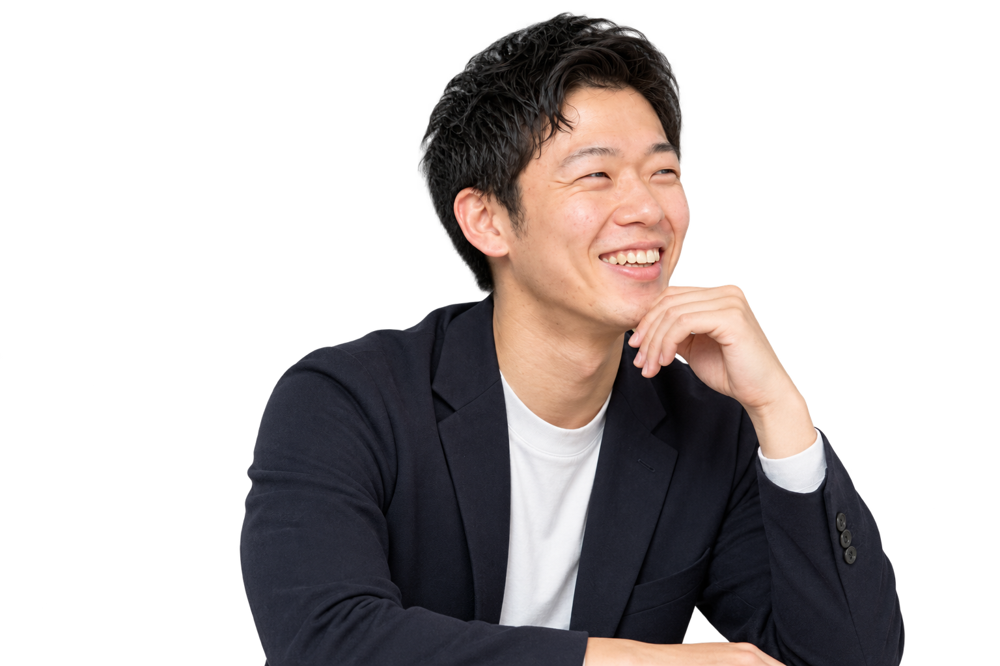
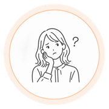
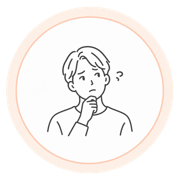
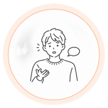
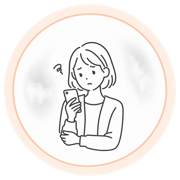

BEFOREサマー全落ち
AFTER年内内定Get

「サマー全落ちの絶望から立ち直れました！」
人事が何を見ているのかを丁寧に教えてくれて、なぜサマー落ちたのか分析・改善することができました
南山大学・4年生

まわりより出遅れてる気がする人へ
何から始めればいいかわからない。
大丈夫。ぜんぶ一から教えます。
所要1分／質問だけでもOK
オンライン／何度でも無料




就活の知識ゼロでも大丈夫。
わからないことを、わからないまま持ってきてください。
所要1分／質問だけでもOK
オンライン／何度でも無料
人事が何を見ているのかを丁寧に教えてくれて、なぜサマー落ちたのか分析・改善することができました
教育学部・地方大学なこともあり相談できる相手がいませんでした…。しゅうやさんが親身に向き合ってくれたおかげで無事納得する就活ができました！
大学受験に失敗し、本来の第一志望の大学に行った人たちと肩を並べられる就活がしたいと就活をスタート。学歴コンプを抱えていましたが、これまでの僕の経験をきちんとまとめてくれ、夜中まで一緒に対策してくれたおかげで今コンサルで働けています。
はい、参加費はかかりません。学生の方からお金をいただくことは一切ありません。
求人のご紹介もできますが、必須ではありません。相談だけで終えることもできます。開始時に「紹介あり／なし」を確認します。
26・27・28卒の方が対象です。既卒の方はご相談ください。
特にありません。ESや自己分析シートがあれば共有いただけますが、なくても問題ありません。
顔出しなし・私服で大丈夫です。移動中や自宅から、リラックスした状態で参加してください。
大丈夫です。大学名で対策の中身を変えることはありません。むしろ「学歴で不利かも」と感じている方ほど、伝え方を整えるだけで結果が変わります。
大丈夫です。継続の義務はありません。必要になったタイミングでまた予約していただけます。